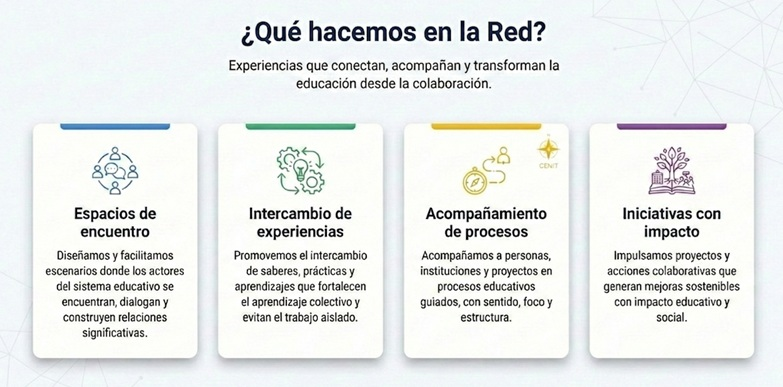

La educación no ocurre de manera aislada. Cuando instituciones, docentes, líderes, estudiantes y comunidades se conectan, surge una fuerza colectiva capaz de transformar prácticas y fortalecer proyectos.
Cuando los actores del sistema educativo trabajan de manera fragmentada, el conocimiento se concentra, las experiencias no se comparten y las soluciones se repiten sin diálogo ni contraste. Esta desconexión reduce la capacidad de adaptación, debilita los procesos de mejora y limita el impacto de los esfuerzos educativos.
Trabajar en red amplía la mirada y facilita el intercambio de experiencias, saberes y prácticas entre distintos actores. La colaboración fortalece la relación entre lo pedagógico, lo estratégico y lo comunitario, convirtiendo la diversidad de perspectivas en una ventaja para aprender, innovar y transformar.
RedConecta surge como un espacio de networking educativo que reconoce la educación como un proceso colectivo y relacional. Conecta a los distintos actores del sistema para aprender juntos, acompañarse y construir mejoras sostenibles con impacto real en las comunidades educativas y sociales.
Es un espacio de crecimiento colectivo en red y un punto de encuentro donde convergen experiencias, iniciativas, saberes y proyectos orientados al mejoramiento y fortalecimiento de la educación en sus múltiples contextos. Nace de una comprensión de la educación como un proceso continuo que impulsa el desarrollo humano y la calidad de vida.

RedConecta funciona como un espacio de articulación y crecimiento colectivo en red, donde distintos actores del ecosistema educativo se vinculan para aprender juntos, compartir experiencias y desarrollar iniciativas con impacto real.
Su funcionamiento se activa a través de escenarios estructurados como procesos de acompañamiento, comunidades de aprendizaje, encuentros, programas y eventos, que permiten el intercambio de saberes, prácticas y estrategias. No centraliza las acciones ni las soluciones: dinamiza procesos, conecta iniciativas y acompaña proyectos sostenibles.

Ser parte de RedConecta significa integrarse a una red viva de aprendizaje, colaboración y crecimiento, donde las experiencias y los saberes se potencian.
Vincularse a RedConecta es un acto consciente de participación y construcción colectiva. Complete su registro institucional básico abajo para formalizar la vinculación.